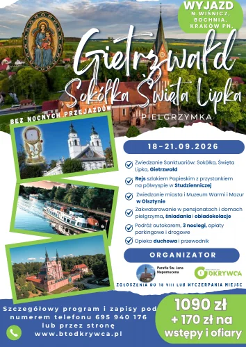

Start / Pielgrzymki / Gietrzwałd, Sokółka, Święta Lipka
18-21.09.2026 · 4 dni · bez nocnych przejazdów
Pielgrzymka do Gietrzwałdu, Sokółki i Świętej Lipki
Trzy sanktuaria Warmii i Podlasia, rejs Szlakiem Papieskim po Kanale Augustowskim i Olsztyn.
1090 złza osobę


Termin18-21.09.2026
WyjazdNowy Wiśnicz, Bochnia, Kraków
Noclegi3, z wyżywieniem
Cena1090 zł / os.
W programie
- Sokółka - miejsce cudu eucharystycznego z 2008 roku.
- Święta Lipka - Bazylika Nawiedzenia Najświętszej Maryi Panny, jeden z najważniejszych zabytków późnego baroku w północnej Polsce.
- Gietrzwałd - Sanktuarium Matki Bożej Gietrzwałdzkiej, miejsce objawień maryjnych uznanych przez Kościół.
- Rejs Szlakiem Papieskim po jeziorach augustowskich i Kanale Augustowskim, z przystankiem na półwyspie w Studzienicznej.
- Olsztyn - zwiedzanie miasta i Muzeum Warmii i Mazur.
Cena obejmuje
- Transport autokarem i opłaty parkingowe.
- 3 noclegi w Domach Pielgrzyma i ośrodkach wypoczynkowych, śniadania i obiadokolacje.
- Opiekę pilota wycieczek i przewodnika przez cały program, opiekę duchową.
- Ubezpieczenie NNW Signal Iduna 10 000 zł.
- Składki na Turystyczny Fundusz Gwarancyjny i Turystyczny Fundusz Pomocowy.
Dodatkowo 170 zł/os. na bilety wstępu i ofiary: rejs Szlakiem Papieskim, Muzeum Warmii i Mazur, zwiedzanie i ofiary w sanktuariach w Sokółce, Świętej Lipce i Gietrzwałdzie.
Organizacja
Pielgrzymkę organizujemy razem z Parafią św. Jana Nepomucena. Zgłoszenia do 18 sierpnia lub do wyczerpania miejsc. Program realizujemy też dla grup parafialnych w ustalonym z nami terminie.